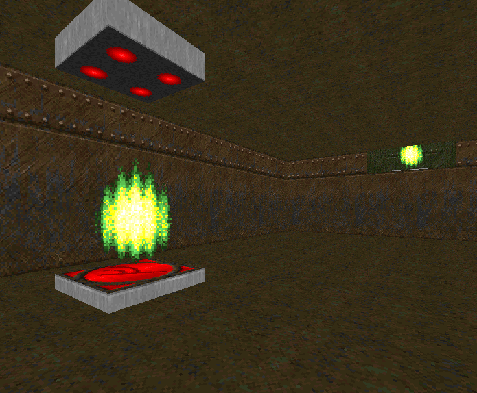
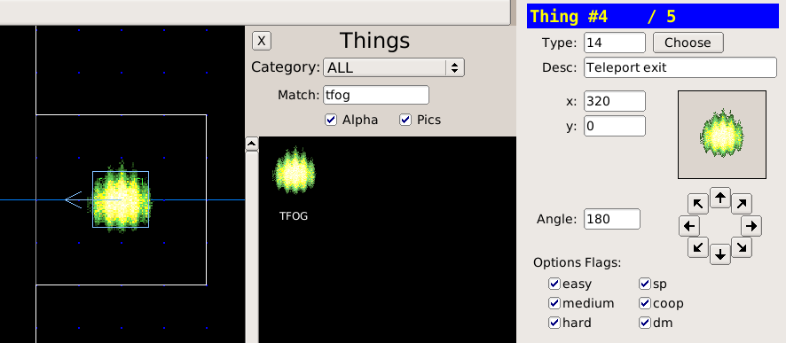

back to the Index | go to next page
Teleporters

A teleport is triggered by walking over a linedef with the teleport special. The tag of the linedef points to the sector where the teleport lands.
Teleport Platform
- Create a 64x64 sector for the teleport platform
- Set the floor texture as GATE1, the ceiling as TLITE6_5
- Enter linedef edit mode (l)
- Press ; then f to apply a fresh tag to all four linedefs. This will point to the teleport landing sector.
- Choose the linedef Type as 97 WR Teleport
|
Note:
A teleport is only triggered when walking from the Front to the Back of a linedef. This is intentional as it allows the player to walk off the landing platform without triggering another unintended teleport.
|
Landing Site
- Tag the landing sector the same as the teleporter linedefs. Press ; then l to apply the last used tag to the landing sector.
- Enter Thing edit mode (t), position the mouse cursor inside the landing sector and press INS. Choose the Type as 14 Teleport Exit (labelled as TFOG in the thing browser)

- Click the directional arrows to set the angle of the TFOG thing. This is the angle faced after teleporting.
Downloads
teleporters.wad
back to the Index | go to next page